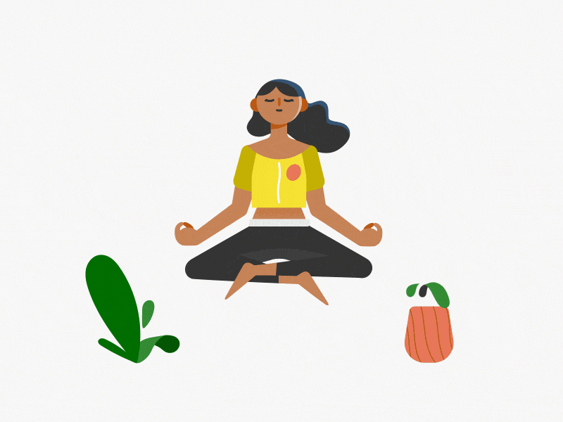

Что такое медитация
Медитация — это древняя практика, которая помогает успокоить ум, снизить уровень стресса и достичь внутренней гармонии. Несмотря на кажущуюся сложность, медитация доступна каждому человеку независимо от возраста или физической подготовки.
Происхождение медитации
Медитация зародилась тысячи лет назад в древних духовных традициях Востока. Первые письменные упоминания о медитативных практиках встречаются в Ведах — священных текстах индуизма, датируемых 1500 годом до нашей эры. Со временем практика распространилась по всему миру и сегодня используется как эффективный инструмент для улучшения психического и физического здоровья.
Как работает медитация
Медитация основана на принципе фокусировки внимания. Когда мы концентрируемся на дыхании, звуке или визуальном объекте, наш мозг переходит в особое состояние. Нейроучёные установили, что регулярная медитация способствует:
- Уменьшению активности миндалевидного тела — зоны мозга, отвечающей за стресс и тревогу
- Увеличению плотности серого вещества в областях, связанных с вниманием и памятью
- Улучшению связи между различными отделами мозга
Основные виды медитации
Медитация осознанности
Самый популярный вид медитации на Западе. Практикующий учится наблюдать за своими мыслями и ощущениями без оценки, просто принимая их такими, какие они есть. Это помогает выйти из автоматических реакций и жить более осознанно.
Трансцендентальная медитация
Основана на повторении мантр — специальных звуков или фраз. Практика занимает 20 минут два раза в день и, согласно исследованиям, помогает снизить кровяное давление и уровень тревоги.
Медитация любящей доброты
Практикующий мысленно посылает пожелания счастья, здоровья и благополучия сначала себе, затем близким людям и в конце концов всем живым существам. Эта практика развивает эмпатию и сострадание.
Медитация — не о том, чтобы остановить мысли. Она о том, чтобы перестать с ними отождествляться.
С чего начать новичку

- Найдите тихое место, где вас никто не будет беспокоить 5-10 минут
- Сядьте удобно с прямой спиной — на стуле или на подушке на полу
- Закройте глаза и сделайте несколько глубоких вдохов
- Сосредоточьтесь на ощущении дыхания в ноздрях или на движении живота
- Когда замечаете, что отвлеклись — мягко возвращайте внимание к дыханию
- Не ругайте себя за отвлечения — это нормальная часть практики
Начните с 5 минут в день и постепенно увеличивайте время. Регулярность важнее продолжительности. Лучше медитировать 5 минут каждый день, чем час раз в неделю.
Вернуться к практикам